59. Introducción al Análisis de Clustering#
59.1. Historia del Clustering#
El análisis de clustering, también conocido como análisis de conglomerados, ha sido un área de estudio vital en la estadística y el aprendizaje automático. Sus orígenes se remontan a los trabajos pioneros en la década de 1930 cuando se comenzaron a desarrollar técnicas para agrupar datos similares. A lo largo de las décadas, se han producido varios hitos importantes:
1930s: Introducción inicial de conceptos básicos en estadística.
1950s: Desarrollo de métodos jerárquicos de clustering.
1960s: Nacimiento del algoritmo K-means.
1980s: Introducción de métodos de clustering basados en densidad y modelos probabilísticos.
59.2. Fundamentos Matemáticos#
El clustering implica la agrupación de un conjunto de objetos de tal manera que los objetos en el mismo grupo (o clúster) son más similares entre sí que los de otros grupos. Algunos conceptos y definiciones clave incluyen:
Distancia: Medida de la disimilitud entre dos puntos de datos. La distancia euclidiana es una de las más comunes.
Centroides: Puntos que representan el centro de un clúster en métodos como K-means.
Métodos Jerárquicos: Algoritmos que crean una jerarquía de clústeres.
Métodos Basados en Densidad: Algoritmos que identifican clústeres basados en regiones de alta densidad de puntos de datos.
La lógica detrás del clustering es maximizar la similitud dentro de un clúster y minimizarla entre diferentes clústeres.
59.3. Ecuaciones#
En el análisis de clustering, varias fórmulas matemáticas son esenciales. Algunas de las más relevantes incluyen:
Distancia Euclidiana: $\( d(p, q) = \sqrt{\sum_{i=1}^n (p_i - q_i)^2} \)\( Donde \)p \(y \) q \( son dos puntos en un espacio \) n $-dimensional.
Función de Costo de K-means: $\( J = \sum_{i=1}^k \sum_{x \in C_i} \| x - \mu_i \|^2 \)\( Donde \) k \( es el número de clústeres, \) C_i \( es el conjunto de puntos en el clúster \) i \(, y \) \mu_i \( es el centroide del clúster \) i $.
import numpy as np
import matplotlib.pyplot as plt
from sklearn.cluster import KMeans
# Generar datos aleatorios
X = np.random.rand(1000, 2)
# Crear el modelo K-means
kmeans = KMeans(n_clusters=4)
kmeans.fit(X)
# Predecir los clústeres
y_kmeans = kmeans.predict(X)
# Graficar los resultados
plt.scatter(X[:, 0], X[:, 1], c=y_kmeans, s=50, cmap='viridis')
centers = kmeans.cluster_centers_
plt.scatter(centers[:, 0], centers[:, 1], c='red', s=200, alpha=0.75)
plt.title('Clustering con K-means')
plt.xlabel('Característica 1')
plt.ylabel('Característica 2')
plt.show()
60. Clustering K-means#
60.1. Historia del K-means#
El algoritmo K-means fue propuesto por primera vez por Stuart Lloyd en 1957 como una técnica de modulación por pulsos. Sin embargo, no fue ampliamente reconocido hasta que J. B. MacQueen lo introdujo en el contexto de la clasificación en 1967. El K-means ha sido fundamental en el desarrollo de la segmentación de clientes y la detección de patrones en datos multidimensionales.
Fortalezas y debilidades del algoritmo K-means:
Fortalezas: Eficiencia en grandes datasets, fácil interpretación.
Debilidades: Sensibilidad a los valores iniciales, dificultad con clusters de diferentes tamaños y formas.
Técnicas de preprocesamiento recomendadas (tabla comparativa):
Técnica |
Descripción |
Beneficio para K-means |
|---|---|---|
Normalización |
Escalar los datos a una misma escala |
Mejora la convergencia |
PCA |
Reducción de dimensionalidad |
Evita la maldición de la dimensionalidad |
60.2. Fundamentos Matemáticos#
Teoría detrás del algoritmo K-means: K-means es un método de clustering que intenta particionar un conjunto de datos en K conjuntos disjuntos, minimizando la suma de distancias cuadradas desde cada punto al centroide de su cluster.
Conceptos clave: centroides (incluir ecuaciones): Los centroides \( c_i \) de los clusters se calculan como el promedio de todos los puntos \( x_j \) asignados al cluster \( i \):
\[ c_i = \frac{1}{|S_i|} \sum_{x_j \in S_i} x_j \]donde \( S_i \) es el conjunto de datos en el cluster \( i \).
Estrategias para determinar el número óptimo de clusters:
Método del codo: Observar el cambio en la suma de las distancias cuadradas internas al aumentar el número de clusters.
Método de la silueta: Evalúa la consistencia dentro de los clusters de datos.
Explicación detallada de cada paso del algoritmo:
Inicializar k centroides aleatoriamente.
Asignar cada punto al centroide más cercano.
Recalcular los centroides como el centro de los puntos asignados.
Repetir los pasos 2 y 3 hasta que los centroides no cambien significativamente.
60.3. Ejemplo en Python#
60.3.1. Descripción breve de algunas columnas importantes#
61. Descripción de las Columnas del Dataset#
Year: Año de los datos financieros reportados.
Company: Nombre de la empresa según cotización en bolsa.
Category: Sector industrial o categoría de la empresa.
Market Cap(in B USD): Capitalización de mercado de la empresa en miles de millones de dólares.
Revenue: Ingresos totales de la empresa en el año fiscal correspondiente.
Gross Profit: Beneficio bruto, calculado como los ingresos menos el costo de bienes vendidos.
Net Income: Ingreso neto, siendo el resultado final después de todos los gastos, impuestos y amortizaciones.
Earning Per Share: Ganancias por acción, una medida de la porción de ganancias de la empresa asignada a cada acción de sus acciones comunes.
EBITDA: Ganancias antes de intereses, impuestos, depreciación y amortización.
Share Holder Equity: Patrimonio neto de los accionistas, calculado como activos totales menos obligaciones totales.
Cash Flow from Operating Activities: Flujo de caja de las actividades operativas, que indica la cantidad de dinero generado por las operaciones normales de la empresa.
Cash Flow from Investing Activities: Flujo de caja de las actividades de inversión, que muestra el dinero usado o generado en actividades de inversión como adquisiciones de activos fijos.
Cash Flow from Financial Activities: Flujo de caja de actividades financieras, reflejando el flujo de efectivo entre la empresa y sus accionistas, acreedores y otros financieros.
Current Ratio: Ratio de liquidez corriente, que mide la capacidad de la empresa para pagar sus deudas a corto plazo.
Debt/Equity Ratio: Ratio de deuda sobre patrimonio, una medida de la proporción de financiamiento de la empresa que proviene de los acreedores frente a los accionistas.
ROE (Return on Equity): Retorno sobre el patrimonio, que indica cuán efectivamente la gerencia está usando los activos de los accionistas para crear beneficios.
ROA (Return on Assets): Retorno sobre activos, un indicador de qué tan rentable es una empresa antes de apalancamiento, en relación con sus activos totales.
ROI (Return on Investment): Retorno sobre la inversión, una medida de la rentabilidad que compara el beneficio de una inversión con su costo.
Net Profit Margin: Margen de beneficio neto, que muestra el porcentaje de ingresos que queda después de todos los gastos.
Free Cash Flow per Share: Flujo de caja libre por acción, una medida de la solvencia financiera que indica cuánto flujo de caja disponible se asigna a cada acción de una empresa.
Return on Tangible Equity: Retorno sobre el patrimonio tangible, una medida de la rentabilidad generada por los activos tangibles de la empresa.
Number of Employees: Número de empleados de la empresa.
Inflation Rate(in US): Tasa de inflación en los Estados Unidos, que puede afectar la compra y los costos operativos de la empresa.
import pandas as pd
# Cargar los datos
data = pd.read_csv('/content/Financial Statements.csv')
data.columns = ['Year', 'Company', 'Category', 'Market Cap(in B USD)', 'Revenue',
'Gross Profit', 'Net Income', 'Earning Per Share', 'EBITDA',
'Share Holder Equity', 'Cash Flow from Operating',
'Cash Flow from Investing', 'Ca sh Flow from Financial Activities',
'Current Ratio', 'Debt/Equity Ratio', 'ROE', 'ROA', 'ROI',
'Net Profit Margin', 'Free Cash Flow per Share',
'Return on Tangible Equity', 'Number of Employees',
'Inflation Rate(in US)']
# Eliminar columnas sin interes
data.drop(['Year','Category'],axis=1,inplace = True)
# Agrupar por compañía y calcular el promedio
grouped_data = data.groupby('Company').mean().reset_index()
grouped_data.index = grouped_data['Company']
grouped_data.drop('Company',axis=1,inplace=True)
---------------------------------------------------------------------------
FileNotFoundError Traceback (most recent call last)
Cell In[2], line 4
1 import pandas as pd
3 # Cargar los datos
----> 4 data = pd.read_csv('/content/Financial Statements.csv')
5 data.columns = ['Year', 'Company', 'Category', 'Market Cap(in B USD)', 'Revenue',
6 'Gross Profit', 'Net Income', 'Earning Per Share', 'EBITDA',
7 'Share Holder Equity', 'Cash Flow from Operating',
(...)
11 'Return on Tangible Equity', 'Number of Employees',
12 'Inflation Rate(in US)']
13 # Eliminar columnas sin interes
File ~/.local/lib/python3.10/site-packages/pandas/io/parsers/readers.py:1026, in read_csv(filepath_or_buffer, sep, delimiter, header, names, index_col, usecols, dtype, engine, converters, true_values, false_values, skipinitialspace, skiprows, skipfooter, nrows, na_values, keep_default_na, na_filter, verbose, skip_blank_lines, parse_dates, infer_datetime_format, keep_date_col, date_parser, date_format, dayfirst, cache_dates, iterator, chunksize, compression, thousands, decimal, lineterminator, quotechar, quoting, doublequote, escapechar, comment, encoding, encoding_errors, dialect, on_bad_lines, delim_whitespace, low_memory, memory_map, float_precision, storage_options, dtype_backend)
1013 kwds_defaults = _refine_defaults_read(
1014 dialect,
1015 delimiter,
(...)
1022 dtype_backend=dtype_backend,
1023 )
1024 kwds.update(kwds_defaults)
-> 1026 return _read(filepath_or_buffer, kwds)
File ~/.local/lib/python3.10/site-packages/pandas/io/parsers/readers.py:620, in _read(filepath_or_buffer, kwds)
617 _validate_names(kwds.get("names", None))
619 # Create the parser.
--> 620 parser = TextFileReader(filepath_or_buffer, **kwds)
622 if chunksize or iterator:
623 return parser
File ~/.local/lib/python3.10/site-packages/pandas/io/parsers/readers.py:1620, in TextFileReader.__init__(self, f, engine, **kwds)
1617 self.options["has_index_names"] = kwds["has_index_names"]
1619 self.handles: IOHandles | None = None
-> 1620 self._engine = self._make_engine(f, self.engine)
File ~/.local/lib/python3.10/site-packages/pandas/io/parsers/readers.py:1880, in TextFileReader._make_engine(self, f, engine)
1878 if "b" not in mode:
1879 mode += "b"
-> 1880 self.handles = get_handle(
1881 f,
1882 mode,
1883 encoding=self.options.get("encoding", None),
1884 compression=self.options.get("compression", None),
1885 memory_map=self.options.get("memory_map", False),
1886 is_text=is_text,
1887 errors=self.options.get("encoding_errors", "strict"),
1888 storage_options=self.options.get("storage_options", None),
1889 )
1890 assert self.handles is not None
1891 f = self.handles.handle
File ~/.local/lib/python3.10/site-packages/pandas/io/common.py:873, in get_handle(path_or_buf, mode, encoding, compression, memory_map, is_text, errors, storage_options)
868 elif isinstance(handle, str):
869 # Check whether the filename is to be opened in binary mode.
870 # Binary mode does not support 'encoding' and 'newline'.
871 if ioargs.encoding and "b" not in ioargs.mode:
872 # Encoding
--> 873 handle = open(
874 handle,
875 ioargs.mode,
876 encoding=ioargs.encoding,
877 errors=errors,
878 newline="",
879 )
880 else:
881 # Binary mode
882 handle = open(handle, ioargs.mode)
FileNotFoundError: [Errno 2] No such file or directory: '/content/Financial Statements.csv'
grouped_data.describe()
| Market Cap(in B USD) | Revenue | Gross Profit | Net Income | Earning Per Share | EBITDA | Share Holder Equity | Cash Flow from Operating | Cash Flow from Investing | Cash Flow from Financial Activities | Current Ratio | Debt/Equity Ratio | ROE | ROA | ROI | Net Profit Margin | Free Cash Flow per Share | Return on Tangible Equity | Number of Employees | Inflation Rate(in US) | |
|---|---|---|---|---|---|---|---|---|---|---|---|---|---|---|---|---|---|---|---|---|
| count | 12.000000 | 12.000000 | 12.000000 | 12.000000 | 12.000000 | 12.000000 | 12.000000 | 12.000000 | 12.000000 | 12.000000 | 12.000000 | 12.000000 | 12.000000 | 12.000000 | 12.000000 | 12.000000 | 12.000000 | 12.000000 | 12.000000 | 12.000000 |
| mean | 319.438207 | 73298.100712 | 35771.617184 | 11602.451459 | 0.734406 | 19132.378627 | 54724.555287 | 19751.142839 | -9205.990749 | -8016.567477 | 1.973836 | 0.613918 | 12.384421 | 7.240769 | 11.459178 | 13.151357 | 0.173277 | 25.626534 | 144661.514021 | 2.224717 |
| std | 359.698222 | 68350.587184 | 30677.781432 | 15594.520809 | 3.978386 | 21661.054108 | 45584.772958 | 20593.617819 | 9884.660189 | 12998.355538 | 1.438575 | 2.048822 | 24.283911 | 8.106131 | 12.168570 | 10.728342 | 0.405936 | 29.774198 | 151793.363013 | 0.234960 |
| min | 3.718000 | 9481.046800 | 5518.142800 | -1042.900000 | -9.821000 | 1.000000 | 2699.600000 | -584.200000 | -22742.571429 | -41329.714286 | 0.817836 | -2.835779 | -42.205129 | -7.673860 | -11.312493 | -3.489940 | -0.756980 | -12.581607 | 11736.533333 | 1.555050 |
| 25% | 46.616429 | 22327.278571 | 10190.203625 | 2230.512400 | 0.340813 | 2952.414978 | 13792.706079 | 3753.926295 | -18985.860714 | -11369.500000 | 1.085800 | 0.174060 | 4.799680 | 0.619627 | 2.725880 | 4.109484 | -0.102477 | 5.550645 | 47633.446429 | 2.235500 |
| 50% | 144.299643 | 47955.100714 | 24780.857143 | 4196.421429 | 1.393646 | 12111.110857 | 54382.750000 | 14259.532143 | -5707.765873 | -2926.203175 | 1.410892 | 0.358189 | 14.720218 | 8.254139 | 12.986964 | 15.275763 | 0.325125 | 21.841823 | 106053.571429 | 2.235500 |
| 75% | 578.207679 | 111170.440476 | 66229.464286 | 16101.000000 | 2.520839 | 27056.642857 | 91496.485179 | 28731.516786 | -1923.097948 | 109.900000 | 2.174634 | 0.612637 | 19.313180 | 13.427036 | 17.344048 | 22.567582 | 0.498351 | 36.705713 | 158722.500000 | 2.259908 |
| max | 991.332857 | 211829.214286 | 84650.500000 | 48611.642857 | 6.171429 | 68080.428571 | 137466.857143 | 63994.857143 | 5518.428571 | 3419.500000 | 5.069060 | 6.287986 | 61.273936 | 19.139679 | 33.561036 | 27.399160 | 0.596821 | 89.023000 | 536050.000000 | 2.591289 |
grouped_data.head()
| Market Cap(in B USD) | Revenue | Gross Profit | Net Income | Earning Per Share | EBITDA | Share Holder Equity | Cash Flow from Operating | Cash Flow from Investing | Cash Flow from Financial Activities | Current Ratio | Debt/Equity Ratio | ROE | ROA | ROI | Net Profit Margin | Free Cash Flow per Share | Return on Tangible Equity | Number of Employees | Inflation Rate(in US) | |
|---|---|---|---|---|---|---|---|---|---|---|---|---|---|---|---|---|---|---|---|---|
| Company | ||||||||||||||||||||
| AAPL | 991.332857 | 211829.214286 | 84650.500000 | 48611.642857 | 2.435643 | 68080.428571 | 90552.785714 | 63994.857143 | -21729.285714 | -41329.714286 | 1.453207 | 0.775993 | 61.273936 | 19.139679 | 33.561036 | 22.532614 | 0.487586 | 62.382064 | 106428.571429 | 2.2355 |
| AIG | 47.514286 | 59103.857143 | 14399.571429 | 2991.428571 | -2.579286 | 14279.428571 | 82613.428571 | 4109.428571 | 5518.428571 | -10149.928571 | 1.000000 | 0.558186 | 4.069250 | 0.745786 | 3.265943 | 4.694714 | 0.381371 | 4.822121 | 56000.000000 | 2.2355 |
| AMZN | 551.926429 | 188247.142857 | 72764.642857 | 5879.500000 | 0.580607 | 19945.357143 | 42302.571429 | 21655.357143 | -18259.214286 | 361.000000 | 1.114400 | 0.422207 | 11.197943 | 3.333736 | 8.480193 | 2.353793 | -0.081100 | 14.867950 | 536050.000000 | 2.2355 |
| BCS | 43.922857 | 36806.344286 | 36806.344286 | 2875.013943 | 0.939750 | 1.000000 | 94327.583571 | 25362.855714 | -2964.751171 | -1109.484921 | 1.000000 | 6.287986 | 5.043157 | 0.241150 | 1.105693 | 8.281643 | 0.596821 | 5.793486 | 113485.714286 | 2.2355 |
| GOOG | 657.051429 | 111159.142857 | 64051.071429 | 25120.500000 | 1.847543 | 35686.571429 | 137466.857143 | 38837.500000 | -22742.571429 | -15028.214286 | 4.710343 | 0.046907 | 17.108457 | 13.136229 | 16.549307 | 22.892821 | 0.305171 | 20.059693 | 81828.642857 | 2.2355 |
from sklearn.preprocessing import StandardScaler
# Seleccionar columnas numéricas para normalización
scaler = StandardScaler()
grouped_data = pd.DataFrame(scaler.fit_transform(grouped_data),columns = grouped_data.columns)
grouped_data
| Market Cap(in B USD) | Revenue | Gross Profit | Net Income | Earning Per Share | EBITDA | Share Holder Equity | Cash Flow from Operating | Cash Flow from Investing | Cash Flow from Financial Activities | Current Ratio | Debt/Equity Ratio | ROE | ROA | ROI | Net Profit Margin | Free Cash Flow per Share | Return on Tangible Equity | Number of Employees | Inflation Rate(in US) | |
|---|---|---|---|---|---|---|---|---|---|---|---|---|---|---|---|---|---|---|---|---|
| 0 | 1.951000 | 2.116895 | 1.664147 | 2.478745 | 0.446634 | 2.360207 | 0.820918 | 2.243950 | -1.323278 | -2.676835 | -0.377999 | 0.082624 | 2.102768 | 1.533161 | 1.897071 | 0.913319 | 0.808712 | 1.289368 | -0.263075 | 0.047933 |
| 1 | -0.789593 | -0.216902 | -0.727640 | -0.576736 | -0.869960 | -0.234003 | 0.639007 | -0.793316 | 1.555861 | -0.171423 | -0.707046 | -0.028412 | -0.357641 | -0.836871 | -0.703251 | -0.823303 | 0.535424 | -0.729810 | -0.610066 | 0.047933 |
| 2 | 0.675083 | 1.756537 | 1.259477 | -0.383303 | -0.040378 | 0.039201 | -0.284620 | 0.096578 | -0.956612 | 0.673169 | -0.623987 | -0.097732 | -0.051031 | -0.503417 | -0.255696 | -1.051205 | -0.654506 | -0.377406 | 2.693082 | 0.047933 |
| 3 | -0.800022 | -0.557631 | 0.035229 | -0.584533 | 0.053910 | -0.922488 | 0.907409 | 0.284615 | 0.659483 | 0.555010 | -0.707046 | 2.892574 | -0.315752 | -0.901893 | -0.888672 | -0.474095 | 1.089773 | -0.695735 | -0.214516 | 0.047933 |
| 4 | 0.980337 | 0.578555 | 0.962812 | 0.905391 | 0.292237 | 0.798220 | 1.895842 | 0.968021 | -1.430347 | -0.563412 | 1.986819 | -0.289056 | 0.203184 | 0.759623 | 0.436901 | 0.948388 | 0.339363 | -0.195282 | -0.432343 | 0.047933 |
| 5 | -0.469553 | -0.208743 | -0.020750 | 0.099932 | 0.536102 | 0.243389 | 0.268957 | 0.140029 | -0.557121 | 0.043494 | 0.096107 | -0.163003 | 0.323769 | 0.637497 | 0.374485 | 0.802143 | -0.874515 | 0.203050 | -0.268235 | 0.047933 |
| 6 | -0.547557 | -0.751109 | -0.854432 | -0.415324 | 1.427409 | -0.443109 | -1.162342 | -0.653624 | 0.760038 | 0.263050 | -0.316850 | -1.758615 | -2.347930 | 0.909504 | 0.709762 | 0.926937 | 0.924275 | -1.340325 | 1.216306 | 0.047933 |
| 7 | 1.717231 | 0.579245 | 1.403176 | 1.375430 | 0.879036 | 1.405872 | 0.939317 | 1.282822 | -1.263737 | -1.138668 | 0.294829 | -0.096200 | 0.862073 | 0.977257 | 1.126915 | 1.387106 | 0.919507 | 0.945462 | -0.044002 | 0.481942 |
| 8 | -0.367653 | -0.975189 | -1.030020 | -0.629360 | 0.038486 | -0.792225 | -1.053866 | -0.865437 | 0.798084 | 0.575304 | 2.247263 | -0.195737 | 0.289424 | 0.650145 | 0.332932 | 0.427421 | -0.185297 | -0.070250 | -0.914636 | 0.481942 |
| 9 | -0.861962 | -0.862216 | -0.815472 | -0.796156 | -0.292196 | -0.776159 | -0.899185 | -0.883746 | 0.369337 | 0.918930 | -0.839305 | 0.324333 | -0.909792 | -0.926918 | -1.954563 | -1.422810 | -0.951245 | -1.206556 | -0.840341 | 0.047933 |
| 10 | -0.570545 | -0.867465 | -0.956008 | -0.627146 | 0.299883 | -0.757227 | -0.879409 | -0.788525 | 0.369945 | 0.875115 | -0.439443 | -0.202627 | 0.015529 | -0.376354 | -0.070663 | -0.013775 | 0.442041 | -0.046437 | -0.841186 | 1.629520 |
| 11 | -0.916766 | -0.591977 | -0.920518 | -0.846941 | -2.771164 | -0.921678 | -1.192027 | -1.031367 | 1.018349 | 0.646266 | -0.613343 | -0.468148 | 0.185399 | -1.921733 | -1.005222 | -1.620126 | -2.393533 | 2.223921 | 0.519011 | -2.976869 |
from sklearn.cluster import KMeans
from sklearn.metrics import silhouette_score
silhouette_scores = []
K_range = range(2, 11) # Probar entre 2 y 10 clusters
for K in K_range:
kmeans = KMeans(n_clusters=K, random_state=42)
kmeans.fit(grouped_data)
score = silhouette_score(grouped_data, kmeans.labels_)
silhouette_scores.append(score)
# Visualización de los puntajes de silueta para diferentes valores de K
import matplotlib.pyplot as plt
plt.figure(figsize=(10, 6))
plt.plot(K_range, silhouette_scores, marker='o')
plt.xlabel('Número de clusters')
plt.ylabel('Puntaje de Silueta')
plt.title('Silueta para diferentes números de clusters')
plt.show()
/usr/local/lib/python3.10/dist-packages/sklearn/cluster/_kmeans.py:870: FutureWarning: The default value of `n_init` will change from 10 to 'auto' in 1.4. Set the value of `n_init` explicitly to suppress the warning
warnings.warn(
/usr/local/lib/python3.10/dist-packages/sklearn/cluster/_kmeans.py:870: FutureWarning: The default value of `n_init` will change from 10 to 'auto' in 1.4. Set the value of `n_init` explicitly to suppress the warning
warnings.warn(
/usr/local/lib/python3.10/dist-packages/sklearn/cluster/_kmeans.py:870: FutureWarning: The default value of `n_init` will change from 10 to 'auto' in 1.4. Set the value of `n_init` explicitly to suppress the warning
warnings.warn(
/usr/local/lib/python3.10/dist-packages/sklearn/cluster/_kmeans.py:870: FutureWarning: The default value of `n_init` will change from 10 to 'auto' in 1.4. Set the value of `n_init` explicitly to suppress the warning
warnings.warn(
/usr/local/lib/python3.10/dist-packages/sklearn/cluster/_kmeans.py:870: FutureWarning: The default value of `n_init` will change from 10 to 'auto' in 1.4. Set the value of `n_init` explicitly to suppress the warning
warnings.warn(
/usr/local/lib/python3.10/dist-packages/sklearn/cluster/_kmeans.py:870: FutureWarning: The default value of `n_init` will change from 10 to 'auto' in 1.4. Set the value of `n_init` explicitly to suppress the warning
warnings.warn(
/usr/local/lib/python3.10/dist-packages/sklearn/cluster/_kmeans.py:870: FutureWarning: The default value of `n_init` will change from 10 to 'auto' in 1.4. Set the value of `n_init` explicitly to suppress the warning
warnings.warn(
/usr/local/lib/python3.10/dist-packages/sklearn/cluster/_kmeans.py:870: FutureWarning: The default value of `n_init` will change from 10 to 'auto' in 1.4. Set the value of `n_init` explicitly to suppress the warning
warnings.warn(
/usr/local/lib/python3.10/dist-packages/sklearn/cluster/_kmeans.py:870: FutureWarning: The default value of `n_init` will change from 10 to 'auto' in 1.4. Set the value of `n_init` explicitly to suppress the warning
warnings.warn(
optimal_k = 3
kmeans = KMeans(n_clusters=optimal_k, random_state=42)
grouped_data['Cluster'] = kmeans.fit_predict(grouped_data)
/usr/local/lib/python3.10/dist-packages/sklearn/cluster/_kmeans.py:870: FutureWarning: The default value of `n_init` will change from 10 to 'auto' in 1.4. Set the value of `n_init` explicitly to suppress the warning
warnings.warn(
data = data.groupby('Company').mean().reset_index()
data['Cluster'] = kmeans.fit_predict(grouped_data)
# Crear una figura para los boxplots
for col in grouped_data:
data.boxplot(column=col, by='Cluster')
plt.show()
/usr/local/lib/python3.10/dist-packages/sklearn/cluster/_kmeans.py:870: FutureWarning: The default value of `n_init` will change from 10 to 'auto' in 1.4. Set the value of `n_init` explicitly to suppress the warning
warnings.warn(
 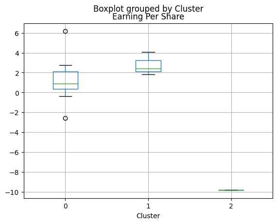
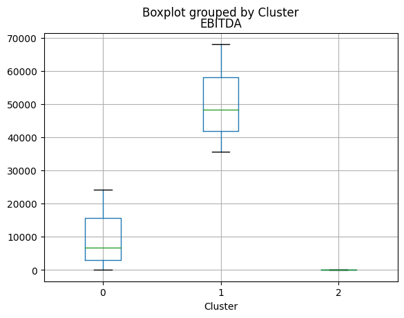
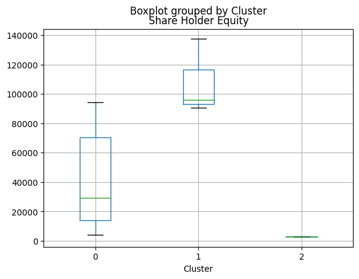
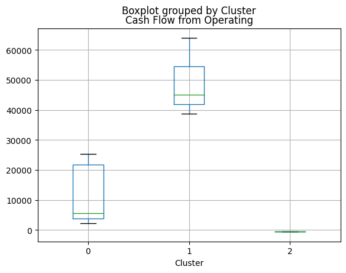
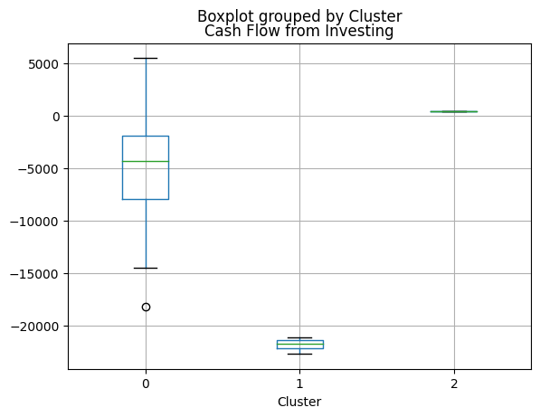
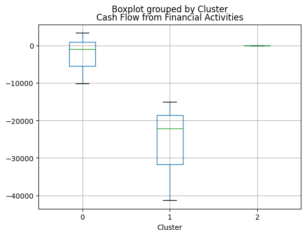
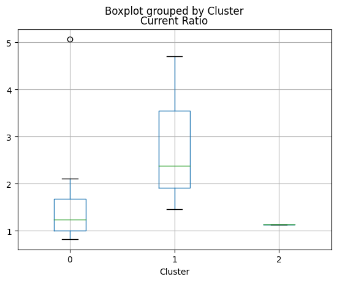
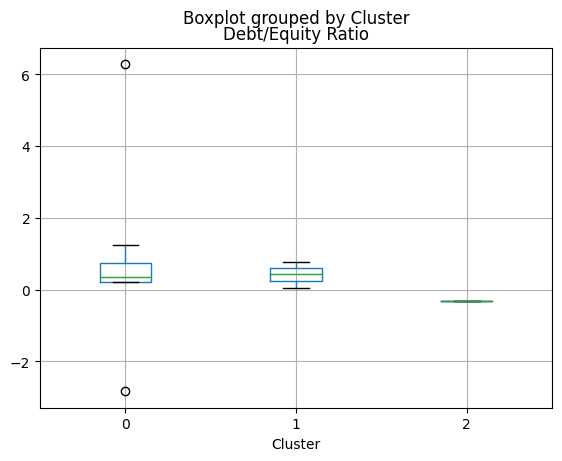
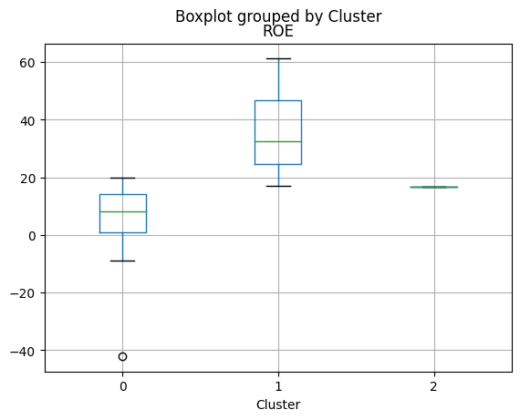
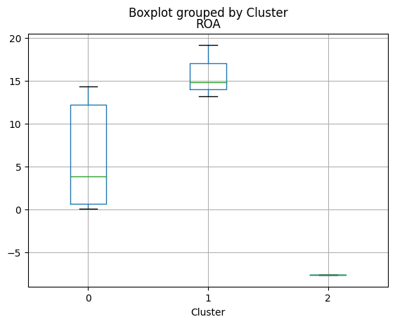
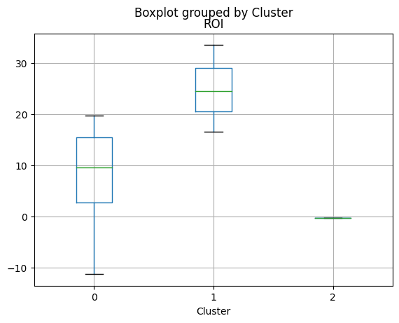
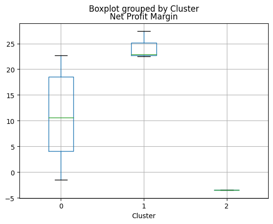
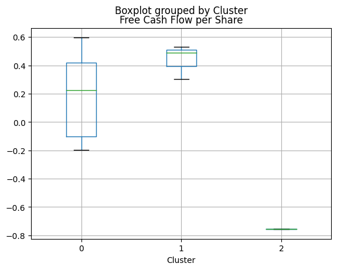
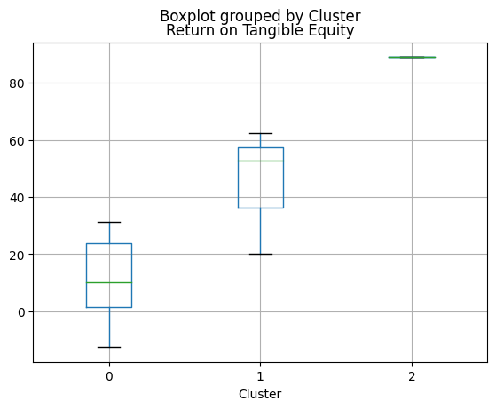
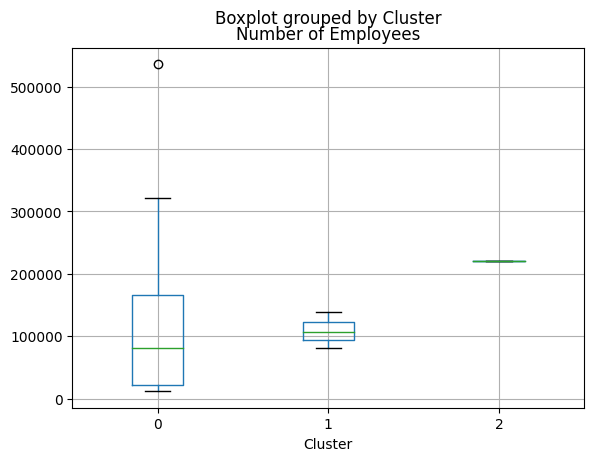
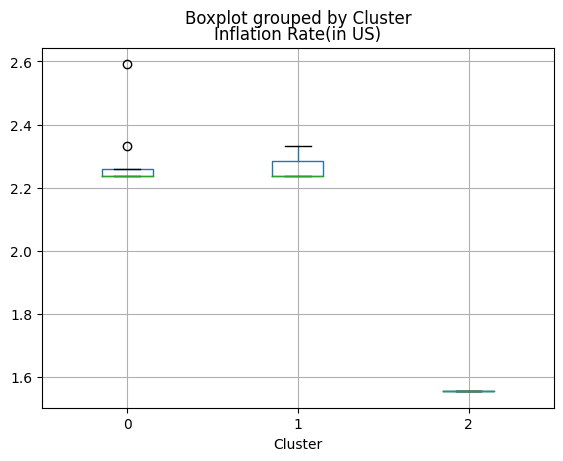
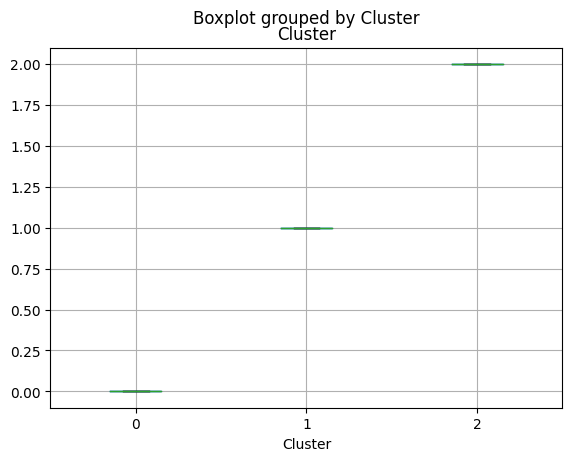
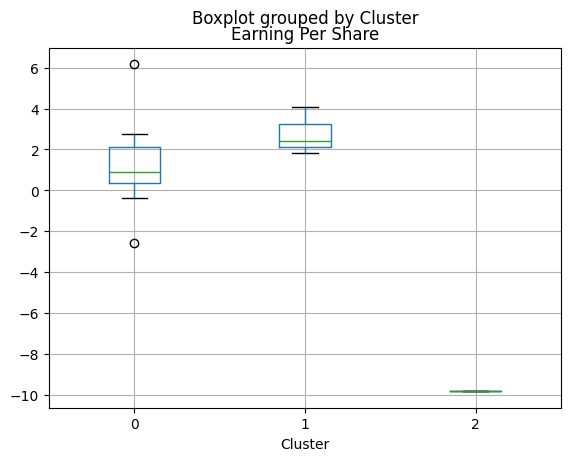
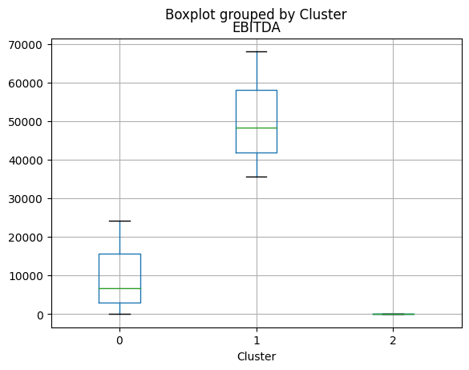
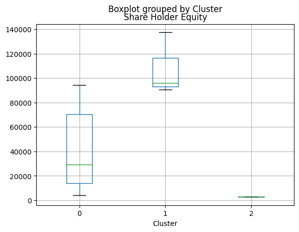
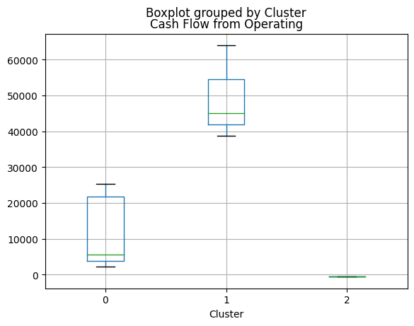
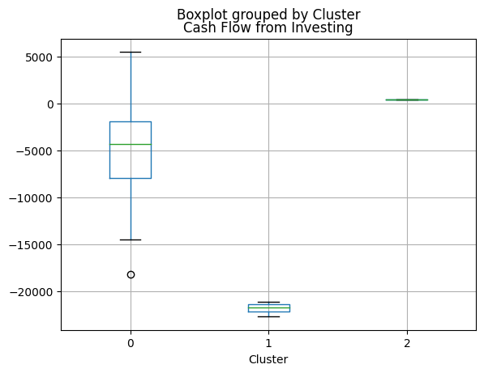
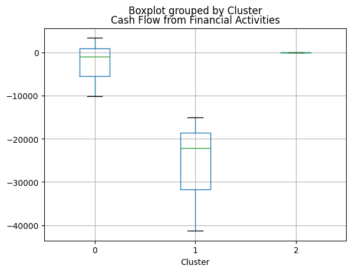
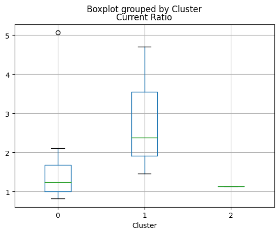
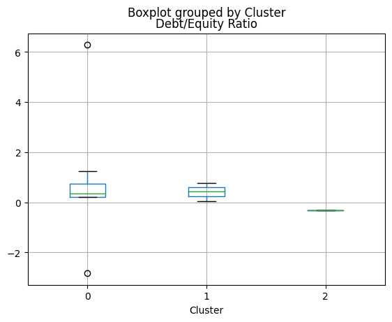
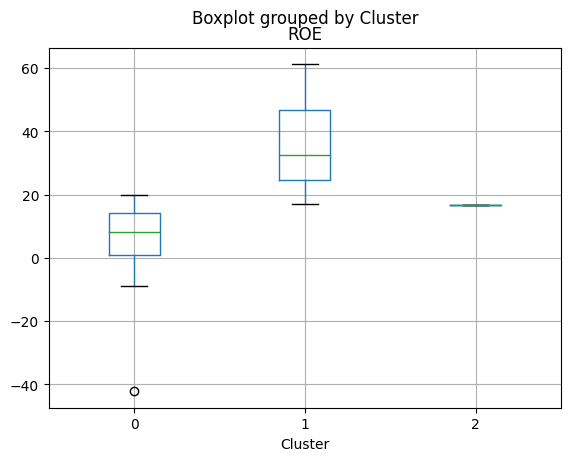
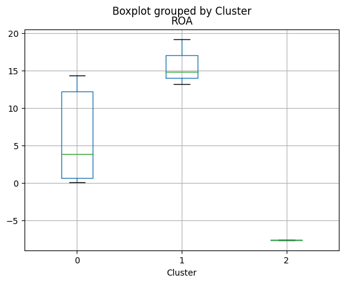
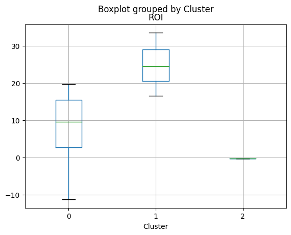
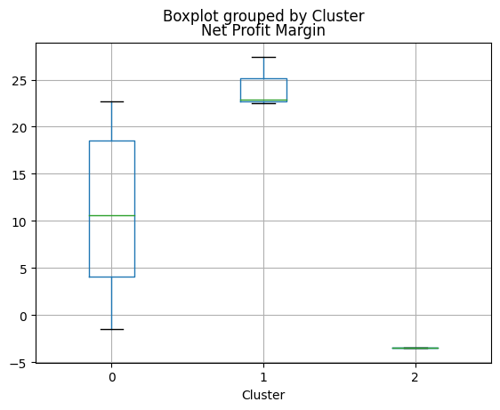
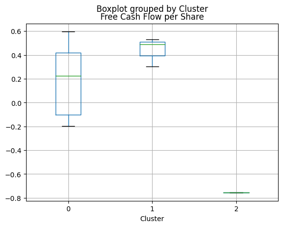
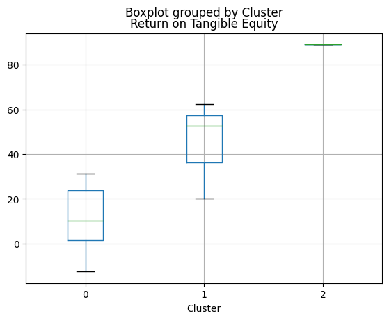
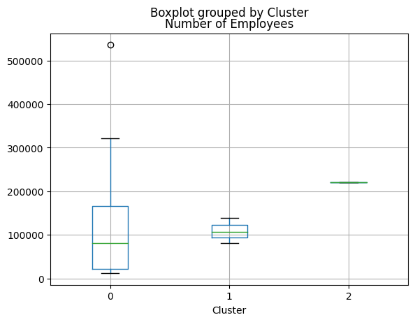
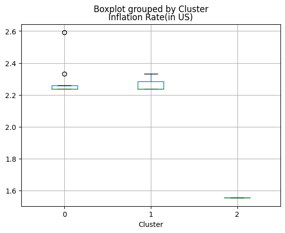
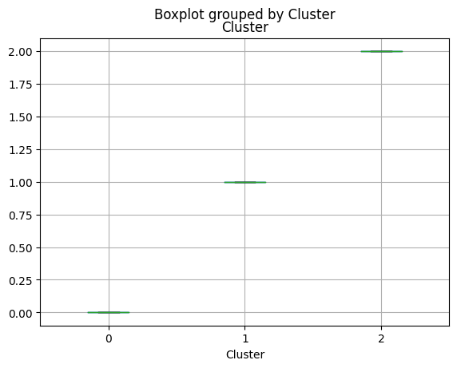
62. Clustering Jerárquico#
62.1. Historia del Clustering Jerárquico#
El clustering jerárquico es un método de análisis que ha sido parte de las estadísticas desde el principio del siglo XX. Sin embargo, no fue hasta los avances en computación y algoritmos en la década de 1950 y 1960 que comenzó a utilizarse ampliamente en diversos campos como biología, marketing y más. Este método es especialmente valorado por su capacidad de organizar y agrupar datos de manera que revela relaciones y estructuras naturales sin necesidad de especificar el número de grupos desde el principio.
El clustering jerárquico se basa en la idea de construir un modelo que mapea las similitudes o diferencias entre los datos en una estructura de árbol, conocida como dendrograma. Esta estructura ayuda a visualizar la jerarquía y a decidir el número de clusters cortando el dendrograma a diferentes alturas.
Existen dos enfoques principales dentro del clustering jerárquico: los métodos aglomerativos y los divisivos. Los métodos aglomerativos son más comunes y funcionan de manera ascendente, comenzando por tratar cada punto de datos como un cluster individual y fusionándolos gradualmente en grupos más grandes. Por otro lado, los métodos divisivos funcionan de manera descendente: comienzan con un solo cluster que engloba todos los datos y luego lo dividen sucesivamente en clusters más pequeños.
62.2. Ecuaciones en el Clustering Jerárquico#
El clustering jerárquico utiliza una variedad de fórmulas matemáticas para medir las distancias entre los puntos de datos y determinar cómo deben agruparse. Las funciones de enlace, que son el corazón de las operaciones de fusión de clusters, definen cómo se calcula la ‘distancia’ entre grupos de puntos. Algunas de las más comunes incluyen:
Single Linkage (Enlace Simple): La distancia entre dos clusters es igual a la distancia más corta entre puntos en los dos grupos.
Complete Linkage (Enlace Completo): La distancia entre dos clusters es igual a la distancia más larga entre puntos en los dos grupos.
Average Linkage (Enlace Promedio): La distancia entre dos clusters es el promedio de todas las distancias entre los puntos en los dos grupos.
Ward’s Method: Minimiza la suma total de las diferencias cuadradas dentro de todos los clusters. Es decir, se trata de un enfoque que busca minimizar la varianza dentro de cada cluster.
El resultado del proceso de clustering se visualiza comúnmente a través de un dendrograma. Un dendrograma es un diagrama en forma de árbol que muestra las agrupaciones y sus respectivas distancias. A medida que se asciende en el dendrograma, los clusters se combinan hasta que todos los puntos están fusionados en un solo grupo. La altura en la que dos clusters se unen representa la distancia entre estos grupos, y cortando el dendrograma a diferentes alturas, se pueden formar diferentes números de clusters.
import pandas as pd
from sklearn.preprocessing import StandardScaler
from scipy.cluster.hierarchy import dendrogram, linkage
import matplotlib.pyplot as plt
# Cargar los datos
data = pd.read_csv('/content/Financial Statements.csv')
data.columns = ['Year', 'Company', 'Category', 'Market Cap(in B USD)', 'Revenue',
'Gross Profit', 'Net Income', 'Earning Per Share', 'EBITDA',
'Share Holder Equity', 'Cash Flow from Operating',
'Cash Flow from Investing', 'Cash Flow from Financial Activities',
'Current Ratio', 'Debt/Equity Ratio', 'ROE', 'ROA', 'ROI',
'Net Profit Margin', 'Free Cash Flow per Share',
'Return on Tangible Equity', 'Number of Employees',
'Inflation Rate(in US)']
data.drop(['Year', 'Category'], axis=1, inplace=True)
grouped_data = data.groupby('Company').mean().reset_index()
grouped_data.index = grouped_data['Company']
grouped_data.drop('Company', axis=1, inplace=True)
# Normalizar los datos
scaler = StandardScaler()
normalized_data = pd.DataFrame(scaler.fit_transform(grouped_data), columns=grouped_data.columns)
# Clustering jerárquico
linked = linkage(normalized_data, 'ward')
# Dendrograma
plt.figure(figsize=(10, 7))
dendrogram(linked, labels=normalized_data.index, orientation='top', distance_sort='descending', show_leaf_counts=True)
plt.title('Dendrograma de Clustering Jerárquico')
plt.xlabel('Empresas')
plt.ylabel('Distancia')
plt.show()